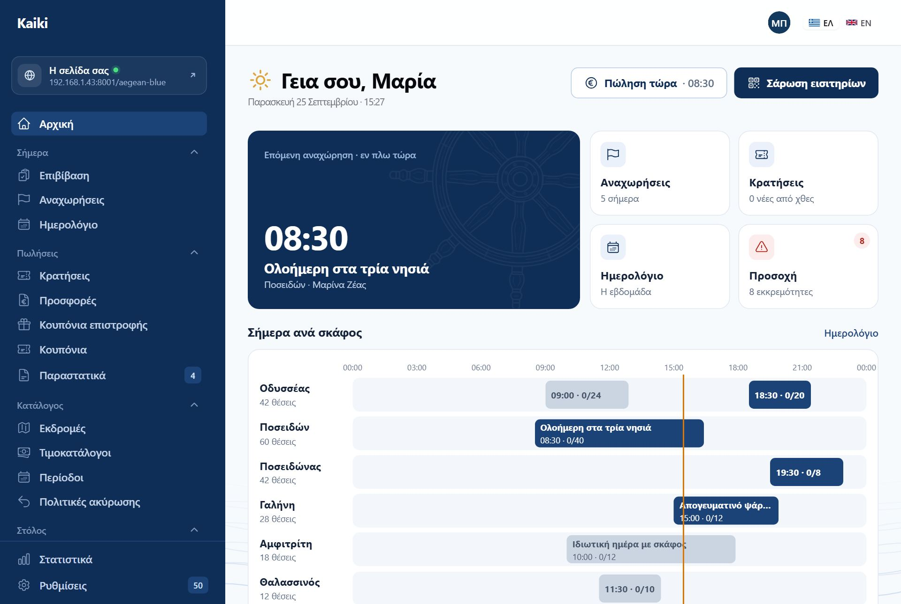
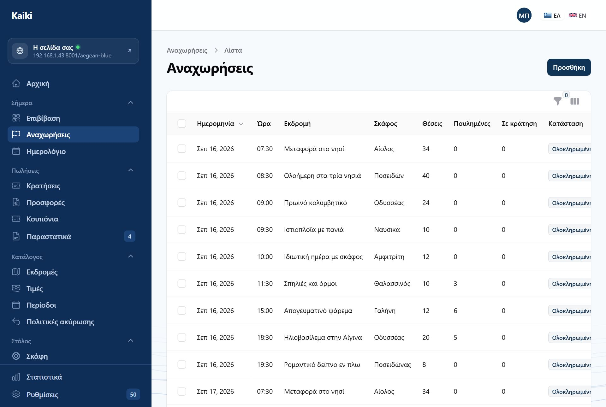
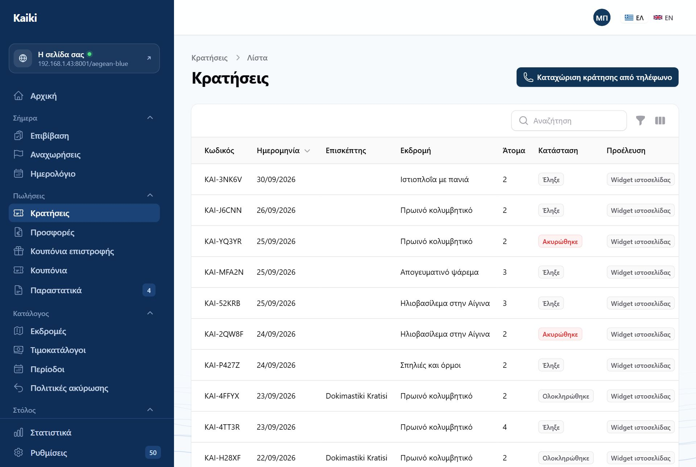
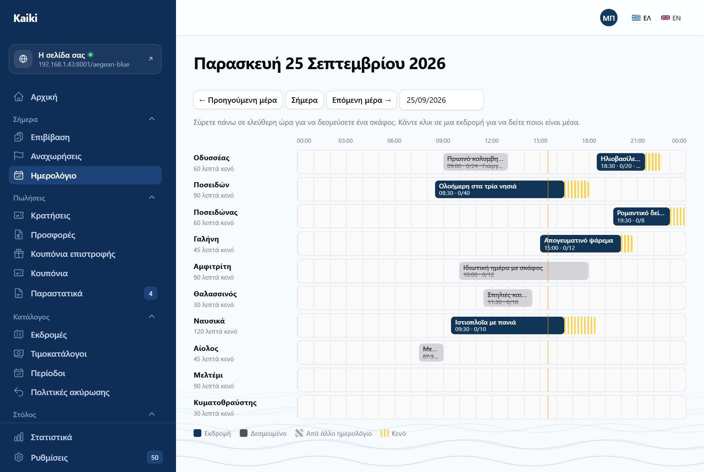
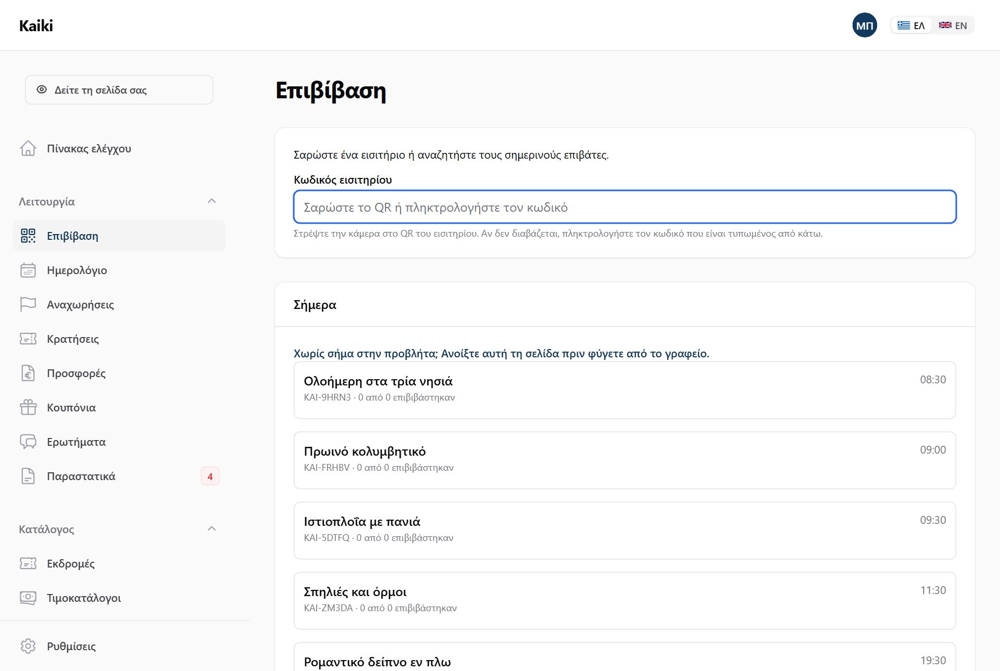
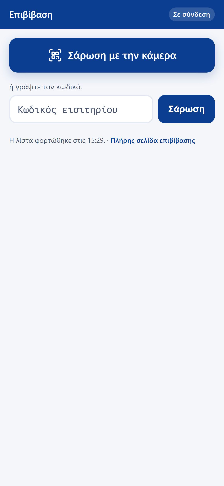

Ο πίνακας ελέγχου το πρωί, οι αναχωρήσεις μέσα στη μέρα, η επιβίβαση στην προβλήτα. Αυτό το μέρος είναι το μεγαλύτερο γιατί εδώ περνάτε τον χρόνο σας.

| Νούμερο | Τι μετράει ακριβώς |
|---|---|
| Αναχωρήσεις σήμερα και αύριο | Οι προγραμματισμένες αναχωρήσεις των δύο ημερών, με τους κλεισμένους επιβάτες. Οι ακυρωμένες δεν μετρούν. |
| Σε κίνδυνο | Αναχωρήσεις μέσα στις επόμενες 48 ώρες που δεν έχουν φτάσει το ελάχιστο για να εκτελεστούν. Είναι η λίστα των τηλεφωνημάτων που πρέπει να κάνετε. |
| Εκκρεμούν στοιχεία επιβατών | Επιβεβαιωμένες κρατήσεις που δεν έχουν ακόμη ονόματα επιβατών. |
| Προσφορές σε αναμονή | Προσφορές που στείλατε και δεν έχουν απαντηθεί. |
| Οφείλονται σε εσάς | Ανοιχτά υπόλοιπα από κρατήσεις που είναι επιβεβαιωμένες ή έχουν ήδη ταξιδέψει. |
| Εισπράξεις εβδομάδας | Από τη Δευτέρα, στη δική σας ώρα. Πληρωμές μείον επιστροφές. |
Καμία δοκιμαστική κράτηση δεν μετράει σε κανένα από τα έξι νούμερα. Όταν υπάρχουν, ο πίνακας το γράφει από κάτω — και μόνο τότε, γιατί μια μόνιμη σημείωση είναι μια σημείωση που σταματά να διαβάζεται.
«Σήμερα στη θάλασσα» δείχνει πού βρίσκεται κάθε σκάφος αυτή τη στιγμή, σε μία λωρίδα ανά σκάφος με τις ώρες οριζόντια. Η κάθετη γραμμή είναι η ώρα που είναι τώρα.
«Χρειάζονται προσοχή» είναι λίστα αποφάσεων: πράγματα που περιμένουν εσάς. Δεν είναι η ίδια με τις «Αστοχίες», που είναι πράγματα που προσπάθησε το σύστημα και δεν τα κατάφερε — εκείνες έχουν κουμπί επανάληψης, αυτές θέλουν άνθρωπο.

Από κάθε γραμμή φτάνετε στα δύο πράγματα που χρειάζεστε τη μέρα της εκδρομής: την κατάσταση επιβατών και την επεξεργασία της συγκεκριμένης αναχώρησης.
Το έγγραφο για το λιμεναρχείο. Περιλαμβάνει το σκάφος, τον κυβερνήτη, τον αριθμό νηολογίου, την ώρα και τους επιβάτες με ονόματα.
Η στήλη με αριθμούς ταυτότητας ή διαβατηρίου δεν βγαίνει από μόνη της. Όποιος τη ζητήσει καταγράφεται στο ιστορικό ενεργειών: ποιος, πότε και για ποια αναχώρηση. Δεν είναι έλλειψη εμπιστοσύνης — είναι το ότι ένας κατάλογος με αριθμούς διαβατηρίων είναι έγγραφο που πρέπει να ξέρετε πού πήγε.

Ανοίγοντας μία κράτηση βλέπετε τι πληρώθηκε και πότε, τι οφείλεται, τους επιβάτες, το ιστορικό της, και τις ενέργειες: σήμανση ως πληρωμένη για μετρητά ή κατάθεση, ακύρωση με την πολιτική που ίσχυε όταν έγινε, και επιστροφή.
Ο πελάτης που τηλεφωνεί είναι ακόμη ο κανόνας, όχι η εξαίρεση. Η χειροκίνητη κράτηση κάνει ό,τι και η κράτηση από το internet, με δύο διαφορές που είναι δικές σας.
Υπάρχει διακόπτης που επιτρέπει να ξεπεράσετε το όριο μιας αναχώρησης — για την περίπτωση που ξέρετε κάτι που δεν ξέρει το σύστημα. Δεν ξεπερνά ποτέ το νόμιμο όριο του σκάφους, και η υπέρβαση καταγράφεται.

Ο λόγος που ο χρόνος προετοιμασίας φαίνεται είναι το τηλεφώνημα «γιατί δεν με αφήνει να κλείσω στις 14:00;». Όταν είναι σχεδιασμένος, η απάντηση είναι στην οθόνη.
Από εδώ βάζετε και δεσμεύσεις σκάφους — συντήρηση, ιδιωτική χρήση, ό,τι κρατά ένα σκάφος εκτός πώλησης για ένα διάστημα.
Δύο οθόνες, γιατί η προβλήτα και το γραφείο είναι δύο διαφορετικά μέρη.


Σαρώνετε, βλέπετε αμέσως το όνομα, και όταν επανέλθει το σήμα φεύγουν όλες οι σαρώσεις μαζί. Πάνω δεξιά λέει καθαρά αν είστε σε σύνδεση ή όχι — αλλιώς δεν ξέρετε αν το τικ σημαίνει «το ξέρει το γραφείο» ή «το ξέρει αυτό το κινητό».
Τα QR των νέων εισιτηρίων δείχνουν σε αυτή τη σελίδα. Όσα έχουν ήδη τυπωθεί συνεχίζουν να δουλεύουν με την παλιά — ένα QR σε χαρτί μέσα σε τσάντα δεν ξαναεκδίδεται.
Αν δεν σαρώνετε εισιτήρια — ένα σκάφος, λίγοι επιβάτες που τους ξέρετε — η επιβίβαση με QR κλείνει από την πλατφόρμα, κατόπιν συνεννόησης. Τα εισιτήρια βγαίνουν τότε χωρίς QR, η σελίδα της προβλήτας δεν υπάρχει, και η «Επιβίβαση» είναι η λίστα των σημερινών επιβατών με ένα πάτημα δίπλα σε κάθε όνομα.
Η μία ενέργεια που δεν θέλετε να κάνετε βιαστικά, και η μία που πάντα γίνεται βιαστικά. Γι' αυτό είναι σε δύο βήματα.
Οι προειδοποιήσεις καιρού στον πίνακα βγαίνουν από πρόγνωση για το λιμάνι αναχώρησης, σε σχέση με τα μποφόρ που έχετε δηλώσει ανά σκάφος. Είναι πληροφορία, όχι εντολή: τίποτε δεν ακυρώνεται αυτόματα, ποτέ.